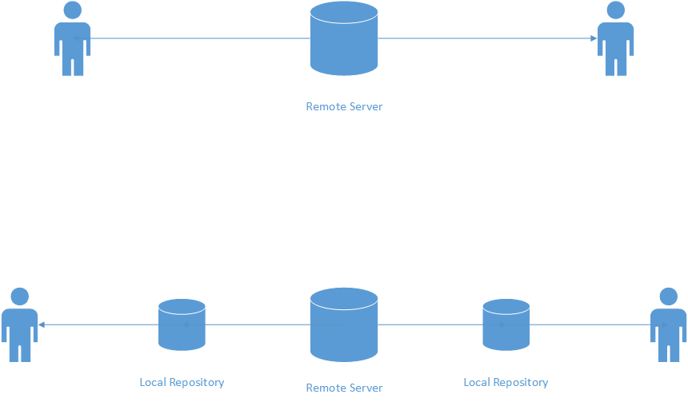

Databases

Image courtesy of Pixabay
Navigational Databases

Image courtesy of Pixabay
Relational Databases

Image courtesy of Pixabay
NoSQL Databases

Image courtesy of Pixabay
Source Control
First Generation

Image from Pixabay
Second Generation

Image courtesy of Pixabay
Third Generation

Image courtesy of Pixabay
Further comparison

The rise of Git

Image courtesy of Pixabay